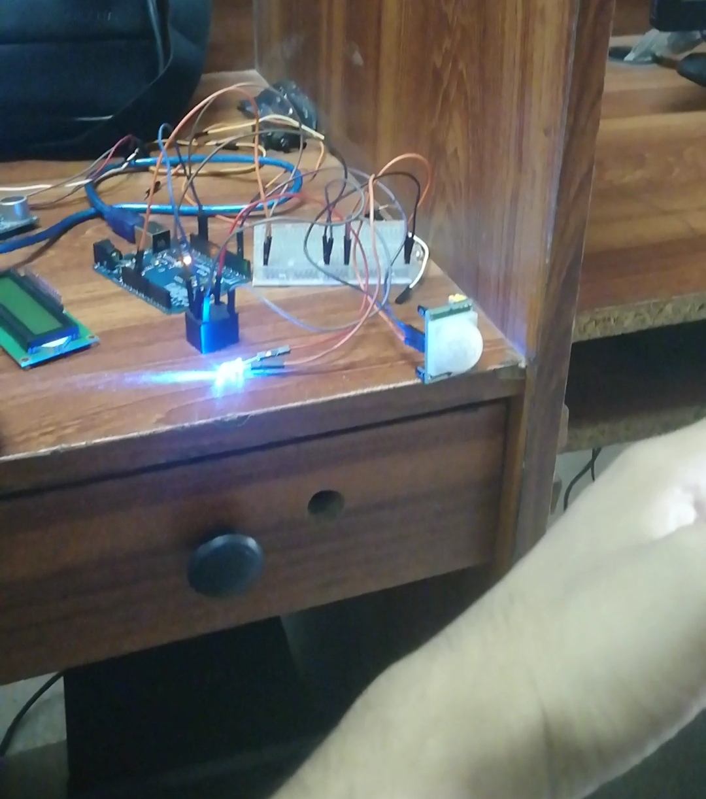
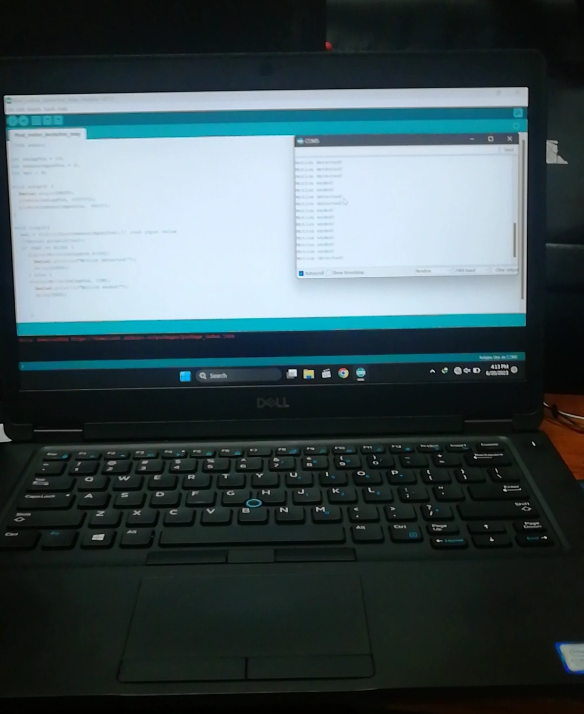

Project Overview:
Smart Motion-Activated Lighting System with Arduino
Our innovative IoT project aims to revolutionize home lighting systems by integrating motion sensors, relays, LEDs, and Arduino technology. This smart lighting solution enhances convenience, energy efficiency, and security within any living space.
At the heart of our project is an Arduino microcontroller, which serves as the central processing unit. The Arduino board is programmed to receive input signals from a motion sensor. Once motion is detected within the sensor's range, the Arduino triggers a relay module, which controls the power supply to an LED light source.
The motion sensor, strategically positioned in the room, continuously monitors its surroundings for any movement. When a person enters the room or moves within its vicinity, the sensor promptly sends a signal to the Arduino board. Upon receiving this signal, the Arduino activates the relay module, completing the circuit and illuminating the LED light.
The LED light, connected through the relay, provides instant illumination in response to detected motion. This functionality is particularly useful in areas such as hallways, corridors, or entryways, where automatic lighting can enhance safety and convenience, especially during nighttime.
Additionally, our project emphasizes energy efficiency by ensuring that the LED light remains on only when motion is detected. Once the motion sensor no longer detects any movement within its range, the Arduino instructs the relay to cut off power to the LED, conserving electricity.
Our system offers a customizable and scalable solution for smart lighting automation in homes, offices, or any indoor environment. By integrating motion sensors with Arduino technology, we have created an intelligent lighting system that adapts to the presence of individuals, providing illumination precisely when and where it is needed.
In conclusion, our IoT project showcases the potential of combining motion sensors, relays, LEDs, and Arduino microcontrollers to create a responsive, energy-efficient, and user-friendly smart lighting solution. With its seamless integration and intuitive operation, our system represents a significant advancement in home automation technology, offering both convenience and sustainability to users.